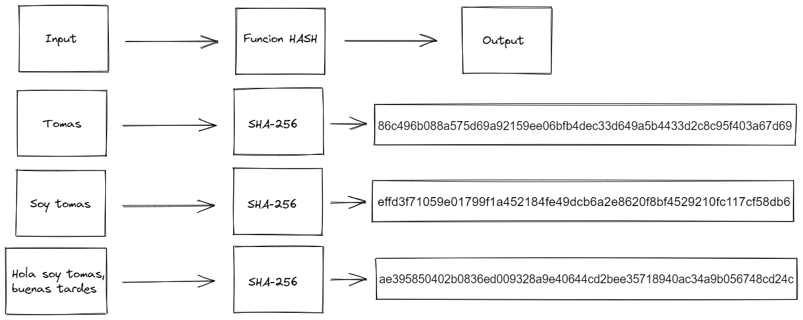
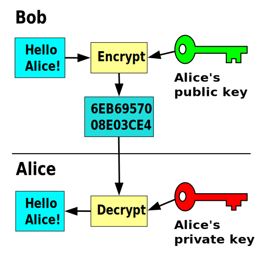
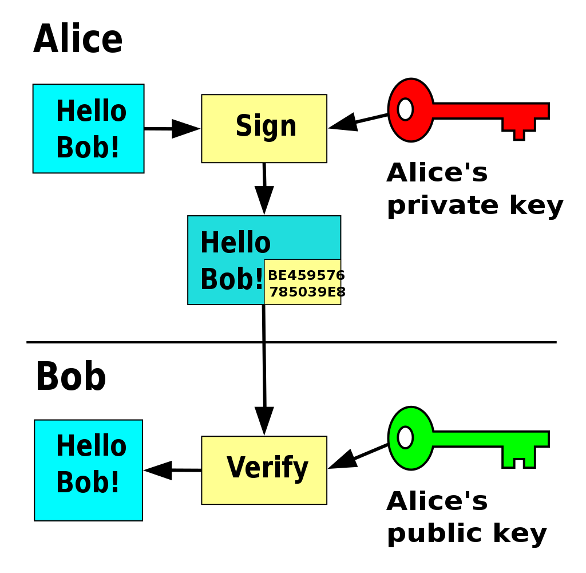

Introducción
Las funciones Hash en conjunto con la criptografía fue una de las herramientas que disparo la posibilidad de empezar a crear nuevos paradigmas dentro de la computación y la tecnología, entre ellos la tecnología Blockchain. Estos mecanismos son usados para múltiples cosas dentro de esto:
- Creación de direcciones o billeteras (Address wallet)
- Proceso de minería
- Contratos inteligentes o Smart contract
Estos puntos son de mucha importancia o diría claves para la tecnología Blockchain, pero empecemos por entender que es la criptografía y el hash o funciones hash.
Criptografía
La palabra viene del griego, su traducción literal es “Escritura secreta” y como nos podemos imaginar es la técnica de cifrar y/o codificar mensajes para que sean a simple vista ilegibles para receptores no autorizados. Es utilizado desde hace muchísimos años tanto en guerras, espionaje como en el arte o la ciencia(quizás recuerdan la maquina ENIGMA) y actualmente fue ganando mas terreno en el área de la tecnología de la mano de la denominada Web3.0.
La criptografía actualmente se encarga del estudio de los algoritmos, protocolos y sistemas que se utilizan para dotar de seguridad a las comunicaciones, a la información y a las entidades que se comunican. El objetivo de la criptografía es diseñar, implementar, implantar, y hacer uso de sistemas criptográficos para dotar de alguna forma de seguridad.
Hash
El nombre de función hash (función de resumen) se utiliza para identificar una función criptografica y como su nombre nos indica convierte un elemento de entrada (normalmente un texto) de largo variable en un “hash” de salida de largo fijo y que para el mismo texto de entrada siempre nos va a devolver el mismo resultado. H : U → M
Por ejemplo uno de los más conocidos es SHA-256.

Podemos ver sin importar el input que tengamos que siempre vamos a recibir un output con la misma cantidad de caracteres, en el caso de SHA-256 van a ser 64.
Bien hasta ahora sabemos que son una serie de complejos cálculos matemáticos y lógicos, que nos permite según una entrada obtener un dato de salida, que siempre va a tener el mismo largo y que gracias a su funcionamiento es casi imposible saber cual fue el dato de entrada.
Las principales características y ventajas que tiene son:
- Fáciles de calcular
- Comprensibles
- Funcionamiento de tipo avalancha
- Son irreversibles
Criptografía moderna
Volviendo nuevamente a la criptografía ahora nos va a ser mas claro poder entender la criptografía moderna y sobre todo el uso que se le aplica, a la denominada criptografía asimétrica y firma digital.
A medida que paso el tiempo se quiso empezar a enviar información o archivos por canales inseguros donde quizás cualquier intruso podía acceder a esta información y copiarla o alterarla sin que el remitente o el destinatario se den cuenta, para evitar esto se empezó a encriptar (como vimos anteriormente ofuscar la información) y desencriptar la información (lograr poder volver a ver la información en el mismo estado que se envió) o firmar los mensajes enviados para que el destinatario sepa realmente que el mensaje que recibe sea de quien lo recibe y sin cambios. Para poder lograr esto surgieron distintos algoritmos matemáticos que nos ayudaron, uno de ellos es firma digital o digital signature.
Encriptación y desencriptación
Encriptar y desencriptar va a ser el mecanismo que nos permita poder enviar información “oculta” de tal forma que enviándola por canales inseguros podamos tener la seguridad de que no haya problemas de intercepción tanto sea para su lectura o manipulación. El circuito consiste de tres pasos.
- Generación de llaves (una publica y una privada)
- Encriptación
- Desencriptación
Circuito
Normalmente para generar las denominadas llaves hoy en día se utiliza ECDSA (Elliptic Curve Digital Signature Algorithm), este algoritmo nos va a generar dos llaves, una publica (se puede compartir) y una privada (no podemos compartirla con nadie).
Una vez que tengamos las llaves el circuito continua sencillamente
- Creamos el mensaje o seleccionamos el archivo que queramos enviar.
- Firmamos esto con la llave publica de la persona que es destinatario (encriptación).
- Enviamos el resultado de esta firma (mensaje encriptado).
- El destinatario recibe el mensaje encriptado y con su llave privada va a poder desencriptar dicho mensaje para poder ver el mensaje original del remitente.

Firma digital
La firma digital típicamente consiste en tres algoritmos.
- Generación de llaves (una publica y una privada)
- Firma
- Verificación de mensaje
Circuito
Igual que con la encriptación y la desencriptación armaremos dos llaves con los mismos algoritmos posibles, el mas común hoy en día ECDSA.
El proceso posterior a la generación de claves es sencillo
- Creamos el mensaje o seleccionamos archivo que queramos enviar.
- Firmamos esto con nuestra clave privada.
- Enviamos el mensaje firmado a nuestro destinatario en conjunto con nuestra llave publica.
- El destinatario recibe el mensaje firmado y la llave publica con la cual puede verificar el mensaje haya sido realmente firmado por el remitente.
